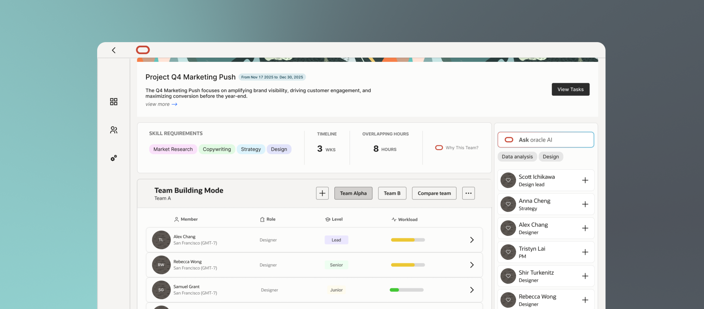
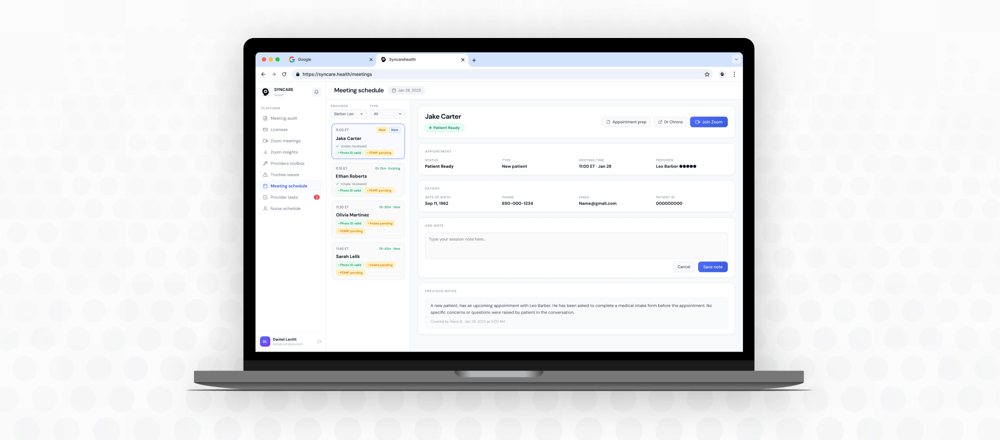
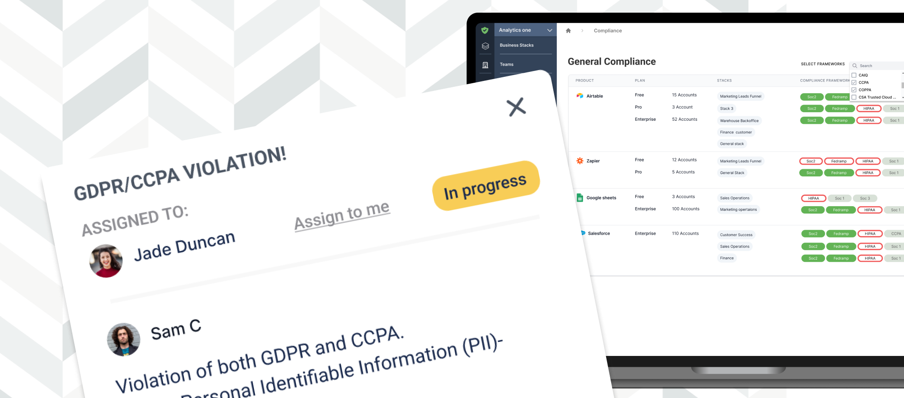
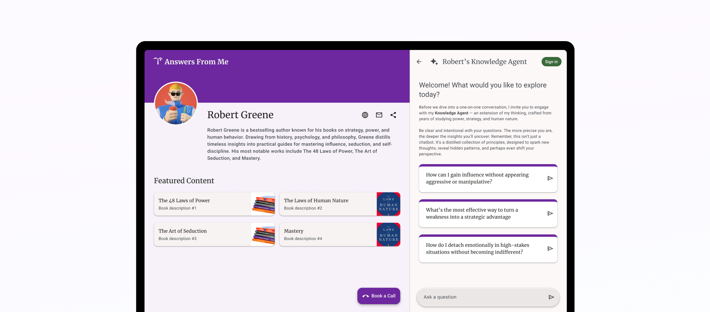

Designing for
humans
in the age of AI
I advocate for users, spot what's broken, and turn complex problems into clear design.

Selected Work

AI-assisted project management tool helping managers prioritize work, allocate resources, and identify risks early.

Redesigned a provider–patient dashboard to reduce complexity and enable faster, confident decisions.

A ticketing feature designed to manage security issues within a cybersecurity platform.

Designed a new expert page and improved seeker–AI interaction.
About me
I've always been the person asking "but why does it work like that?"
I started in law school, building critical thinking and strategy muscles - but I was craving something more creative and human-centered. That pull led me into UX. After working at a cybersecurity startup, I deepened my craft with a Master's in HCI, where I found the intersection of design, empathy, and systems thinking.
Now I'm intrigued by AI-powered and enterprise products - spaces where clarity and trust are must-haves.